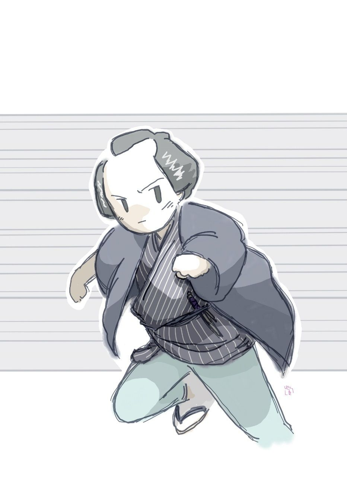

| 兵糧丸秘聞: 銭形平次捕物全集第25話 (銭形倶楽部) | |
| 野村胡堂 | |
| ZENIGATA CLUB (2018) | |

目次
兵粮丸 秘聞
一
銭形平次もこんな突拍子もない事件に出っくわしたことはありません。相手は十万石の大名、一つ間違うと天下の騒ぎになろうも知れない形勢だったのです。
江戸の街はまだ屠蘇 機嫌で、妙にソワソワした正月の四日、平次は回礼も一段落になった安らかな心持を、その陽 溜 りに持って来て、ガラッ八の八五郎を相手に無駄話をしていると、お静に取り次がせて、若い男の追っ立てられるような上ずった声が表の方から聞えて来ます。
「八、こいつは飛んだ御用始めになりそうだぜ、手前 は裏からそっ と廻って、あの客人に気を付けるんだ」
「へエ------
八五郎は腑 に落ちない顔を挙げました。少し造 作 の間伸びはしてますが、そのうちにも何となく仕込みの良い猟犬のような好戦的なところがあります。
「見なきゃ判らないが、多分あの客人の後を跟 けている者があるだろう」
「へエ------」
八五郎は呑込み兼ねた様子ながら、平次の日頃のやり口を知っているだけに、問い返しもせず、お勝手口の方へ姿を消しました。
入れ違いに案内されて来たのは、十七八の武家とも町人とも見える、不思議な若い男。襲われるように後ろを振り返りながら、
「平次親分で御座いますか、------た、大変な事になりました。どうぞお助けを願います」
おろおろした調子ですが、それでも、折目正しく坐ってこう言うのでした。
武家風な前髪立、小倉の袴 を着けて、短かいのを一本紙入止めに差しておりますが、言葉の調子はすっかり町人です。
「どうなすったのです、詳 しく仰しゃって下さい。次第によっては平次、及ばずながら御力になりましょう」
平次はそう言わなければなりませんでした。物に脅 えた美少年の人柄や様子を見ると、その悩みを取り去ってやりたい心持で一パイになる平次だったのです。
「私は------牛込御 納戸 町の一色 道庵 の伜綾之助 と申します」
「えッ、それではもしや、父上道庵様が？」
「ハイ、三人目の行方知れずになった本道 （内科医）で御座います」
「それは大変」
これは平次の方が驚きました。一色道庵というのは、町医者でこそあれ、その頃日本中にも聞えた本草 家 （今の博物学者）で、和漢薬に通じていることでは、当代並ぶ者無しと言われた名家だったのです。
それは兎も角、平次を驚かしたのは、この三人目の行方不明と言うことでした。昨年の秋あたりから、江戸の本草学者が神隠しに逢ったように、相ついで行方不明になっております。最初の一人は赤坂表町の流行医者で本田蓼白 先生、これは二十日目に弁慶 橋 の下へ死体になって浮き上がりました。二番目に行方不明になったのは馬道の名医、伊藤参竜 先生。これは、医者というよりは、本草家の方で有名でしたが、行方不明になってから一ヵ月目、向柳原の土手の上で、袈裟 掛 に斬られて死んでおりました。医者が続けざまにやられるので、見立違いで死んだ病人の遺族が、怨 を酬 いるのではあるまいかと思われましたが、赤坂と馬道ではあまり距 り過ぎて、共通の病人を扱った心当りもないので、間もなくその疑いは晴れました。
しかし、何の為に、医者が二人迄続けざまに殺されたか、御府内の岡っ引が血眼になって搜しましたが、下手人は愚 か、殺した趣意も解りません。向柳原は縄張内で、平次も暮へかけて一と働きしましたが、こればかりは、雲を掴 むようで、全く手の付けようがなかったのでした。
押し詰ってその噂も漸く忘れられ、気に掛りながら正月を迎えた平次、四日の御用始めに三人目の犠牲者 の伜に飛込まれたのですから、これには全く驚きました。世間並の正月気分になっていた自分の怠慢 を指摘されたようで、こんなに恥入ったことはありません。
「御父上------道庵樣が行方知れずになったのは、何時 の事でしょう」
「咋夜、正亥刻 頃------」
「それなら大丈夫、蓼白 様は行方知れずになってから二十日目、参竜様は一と月目で殺されました。曲者が御府内の名医や本草家をさらって行くのには、何か思いも及ばぬ深い仔細がありましょう。兎に角三日や五日のうちに間違いがある気遣いはありません」
「本当でしょうか」
「それはもうお請合いいたします。今度こそはどんな事をしても曲者を嗅ぎ出して、万に一つも、父上様に間違いのあるような事はさせません」
「親分。お願い申します」
綾之助は俯向 きました。半分は気休めと知っても、当時岡っ引の名人と言われた銭形平次にそう言われると、ツイ涙が先走って、これ以上口も利けなかったのです。
二
「親分ッ」
「あッ、八か、どうしたんだ。どこの溝 から這い上がって来たんだ」
木戸を押し倒すように、いきなり庭先へ入って来た八五郎の風態は、全く溝から這い上がって来た鼠のようでした。
「親分、口惜しいよ、女と思って油断をすると、いきなり突き飛ばしゃがるんだ」
「女に突き飛ばされたのを吹聴 したって手柄になるかい。井戸端へ行って水でもかぶって来な、馬鹿野郎」
「ヘエ------」
八五郎は返す言葉もなく井戸端へ廻りました。間もなく寒 垢離 を取るような水の音、昼下がりの陽射しはポカポカするようでも正月四日の寒さに、水の音を聴いただけでゾッと身顫 いが出ます。
「どうしたのです、親分」
綾之助は眉を顰 めました。
「子分のガラッ八というあわて者ですよ、お前さんが入って来なすった時、蔭で声を聴いただけで、誰かに追いかけられるか、後を跟 けられている様子だったから、念のために表を見にやったまでの事ですが、根が悧巧 じゃないから、余計な事をして溝へ投り込まれたんでしょう」
「そう言えば、市ガ谷からここまで、始終誰かにつけていられるようで、何とも言えない厭な心持でしたよ」
綾之助は舌を巻きました。
入口に訪ずれた人の声を聴いただけで、その後を縋 けている者があると察したのは恐ろしい慧眼 です。
「そんな事は何でもありゃしません。八の野郎がつまらない事をしなきゃア、飛んだ手柄になったものを------」
「親分、つまらない事は可哀想だぜ、これでも精一杯の仕事をして来た積りだが------」
八五郎はろくに拭きもしない身体に、新しい袷 を引っかけて出て来ました。
「精一杯の仕事？ 一体どんな物を見て来たんだ」。
「親分に言い付けられて、直ぐ裏から廻ると、向うの荒物屋の角に立って、そっとこちらを見張っている女があるじゃありませんか」
「外には誰もいなかったのか」
「犬っころ一匹いねえ、御町内はまことに太平さ」
「無駄を言うな」
「側へよって首実検 をしようと思ったが、どうしても面 を見せねえ、後ろから覗くようにすると、いきなり筋違 見附の方ヘスタスタ駆け出すじゃありませんか」
「------」
「五六町追っ駆けたが、女のくせに恐ろしく足が早 え、------それに御守殿 崩 しの襟脚が滅法綺麗だ」
「何？ 御守殿崩し？」
「まさか椎茸 髱 じゃねえが、間違いもなく武家の内儀だ。年は二十五六、------もう少し若いかな」
「それがどうした」
「段々人足は多くなるし、見附を越して駕籠にでも乗られるとうるせえ、後ろから追いついて、いきなり姐さんちょいと待って貰おうか------と袖を引くと振り向きもせずにあ っし の手を払った」
「フーム」
「癪 にさわるから、御用ッと首筋へ武者振り付くと身をかわしてデンと来あがった。それで顔も見せねえんだから凄い腕前だ」
「馬鹿野郎、女に溝へ投り込まれて感心する奴があるかい」
「天下の八五郎を溝へ投り込む女は、江戸広しと雖 もたんとあるわけはねえ」
「呆れた野郎だ、それで手掛りもフイだろう。黙って正直に後をつけて行きゃいいものを」
平次の言うのはもっともでした。相手に覚 られずに跟 ける気になったら、思いの外早く曲者の身元が解ったかも知れないのです。
「親分、勘弁しておくんなさい。女に舐 められたのは臍 の緒切って以来だ」
「嘘を吐 け、女には舐 められ通しじゃないか」
「ヘッヘッヘッ、素っ破抜いちゃいけねえ」
ガラッ八は苦笑いをしながらピョコリと頭を下げました。これが精一杯の陳謝の心持でしょう。膝っ小僧がハミ出して、道化たうちにも、妙に打ち萎 れた姿が物の哀れを覚えさせます。
三
銭形平次はガラッ八を伴れて、時を移さず御納戸町の一色家に乗込みました。一子綾之助が曲者に跟 けられたとすると、隠れてコソコソ探索する必要は無かったのです。
道庵は御典医 ではありませんが、上様の御声掛りで、万一の場合は城中にも御呼出しがあって、簾外 から糸脈を引くことなどがあり、町医者ながら苗字帯刀を許され、御納戸町に門戸を張って、江戸三名医の一人と言われるほどの人物でした。
早く妻に死別れて、家族は一子綾之助と、その姉のお絹の三人きり、お絹は父の仕込みで、女ながら本草学に詳しい上、世にすぐれて美しく生い立ちましたが、父道庵の註文がむつかしいので定まる縁もなく、二十歳の春まで、白歯の美しさを山ノ手一円に謡 われております。
乗込んで行った平次も、何から手を付けていいか見当も付きません。昨夜亥刻 時分に、麹町三丁目の雑穀屋で、山ノ手切っての分限 と言われた伊勢屋総兵衛から、急病人があるからと、駕籠を釣らせて迎えに来たので、道庵は取るものも取り敢えず、その駕籠に乗って出掛けましたが、後から薬箱を持って行った下男は、狐につままれたような顔をして戻って来ました。
伊勢屋には病人も何にもなく、道庵を呼んだ覚えは勿論、風邪 薬 を買った者もないのに、松の内から薬箱を持ち込まれて以ての外の機嫌だったのです。
さては------と気の付いたのはもう真夜中過ぎでした。父道庵が不思議な医者殺しの三人目の犠牲者に選ばれたと判ると、お絹、綾之助の姉弟は居ても立ってもいられません。
姉弟打合せた上、弟の綾之助が銭形の平次を訪ねたのはその翌る日の昼頃、平次は柳原で殺された伊東参竜の始末も付いていないので、お面 の安の縄張 を承知の上、二つ返事で飛んで来たのでした。
「駕籠は町駕籠でしたか」
と平次、お絹に引逢わせてくれると、挨拶も抜きにこんな事を訊きます。
「町駕籠のように仕立てて来ましたが、後で気がつくと、道具も人足も思いの外 立派だったようで御座います」
お絹は取乱した中にも、才女らしくハキハキ答えました。二十歳というにしては、少しふけた方ですが、充分美しいうちにも何となく理知的なところのある娘でした。絹の縞物 は少し平常着に贅沢ですが、時めく流行 医者の娘としては、騒ぎの中にもよい嗜 みです。
「提灯の紋は？」
「それも見ませんでした。もっとも昨夜はあの風で、手拭で提灯を包んでも不思議はなかったので御座います」
「フーム」
平次は唸 るばかりです。
「親分、お願いで御座います、一日も早く探し出して下さい」
気象者のお絹も、平次の手を取らぬばかりにこう言うのでした。
門弟達、出入の者、一と通り調べましたが、なんの手掛りもありません。往来で駕籠を見かけた人を捜 すことなどは、時も時、正月三日の江戸の街でも、思いも寄らぬことです。そのうちに松が取れて、世間は次第に静かになりましたが、道庵の行方は見当も付かず、平次もすっかり腐ってしまいました。
「平次、医者殺しの下手人はまだ判らぬか。一色道庵の行方知れずになった事は、殿中の御噂にまで上ったそうだよ」
与力の笹野新三郎は、平次を激励 するともなく、こんな事を言うようになりました。
「恐れ入りますが、もう三日ばかり御待ち下さいまし」
一時逃れと解っても、平次はそう言うより外には言葉もなかったのです。
悄然 として八丁堀から帰って来ると、これも真剣に心配しているには相違ありませんが、物に遠慮のないガラッ八が、
「親分しっかりしておくんなさい、世間じゃそう言ってますぜ------銭形のもタガが弛 みはしないかってね。江戸中の医者が種切れになった日にゃ全く、風邪も引けねえことになりますぜ」
「馬鹿野郎」
平次はムズムズする程腹を立てましたが、さすがにガラッ八を殴りもなりません。
四
「親分、一色道庵が帰って来ましたぜ」
「何？」
「先刻御納戸町を通ったから、ちょいと覗いて見ると、一色の家は盆 と正月が一緒に来たような騒ぎだ」
「そりゃア不思議だ。兎に角行って見よう」
平次はすぐ飛出しました。もう戌刻 過ぎ、夕方から吹き始めた名物の空っ風に、頬も鼻も、千切れて飛びそうな寒さですが、平次の探求心は反って火の如く燃えさかります。
「親分、早 え足だなア、そんなに急がなくたって大丈夫だよ。一色道庵は、向うから駕籠で送り届けられたんだから、当分消えて無くなるわけはねえ」
「無駄を言わずに歩くんだ」
「だって、考えてみるとあっし はまだ晩飯にもあり付かねえ、無駄も言いたくなるじゃありませんか」
「------」
「第一、助かって帰ったにしては、あの医者の浮かねえ顔が解 せねえ」
「何だと」
「一色道庵は家へ帰ってもろくに物も言わず、土壇場 に据えられたような陰気な顔をしているのはどんな訳でしょう、ね親分」
「フーム、それは不思議だ。何か深い仔細 があるんだろう、急ごうぜ八」
「だがネ親分、あのお絹さんとか言う、お嬢さんはたいした容貌 だね」
「------」
「それに確 り者で、学問があって」
「解ってるよ」
そんな事を言いながら、二人は鉄砲丸 のように一色道庵の門を潜りました。
中はガラッ八が言ったように、盆と正月が一緒に来たような騒ぎ、平次はガラッ八を門弟達の部屋に残して、取り敢えず一色道庵に逢って見ましたが、困ったことに誰にさらわれて、十日の間どこに隠されていたか、その事に関す限りは、一言も漏 しません。
「平次親分、留守中は大層御世話になったそうで、お礼の申上げようもありません。お蔭で無事に帰って来ましたが、------いや訊いて下さるな。どこに何をしていたか、そればかりは言えません」
一度話が急所に触れると、分別臭い五十男の坊主頭を、深々と八丈の襟に埋めて、田螺 のように押し黙ってしまうのです。
平次はいろいろ手を尽して問い試みました。娘のお絹も見るに見兼ねて口を添えますが、一色道庵の顔は困惑に硬張るだけで何の役にも立ちません。
「それは料簡違いじゃありませんか。悪いことをした覚えがないから、言うも言わぬも勝手とは思いなさるだろうが、世の中はそれじゃ通りません。------お上 の方には、本草学者を三人も誘拐 したのは、いずれ毒でも盛らせる積りだろう。大きなお家騒動でも始まるか、でもなきゃ、謀叛 を企 らんでいる奴があるに違げえねえ------とこんな噂もあります。万一謀叛人に荷担 して、見聞きした事も漏らさずに、大事が起った時はどうなると思います」
「------」
「その時、一人や二人腹を切ったところで申訳が立ちましょうか。九族根絶やしになってからでは、悔 んでも追付きゃしません」
平次の言葉は急所を突きました。『謀叛』と聞くと、一色道庵はサッと顔色を変えて、静かに四方を見廻しながら、
「申しましょう、------こちらへ」
言葉少なに平次を別室に導 き入れ、改めて四方に気を配ると、自分の胸に手を置いて、ホッと溜息を吐きました。
五
「平次親分、私は世にも不思議な目に遇いました。お蔭で本田蓼白 、伊東参竜両先生が殺された事情もよく解り、私も無い命と覚悟をしましたが、不思議なことで命を助かり、どうやらこうやらこちらへ送り返されました。しかし、何時また伴れて行かれるか、この儘虫のように打ち殺されるか、それさえ解らない心細い身の上です」
一色道庵の話は怪奇を極めました。
こうです。
正月三日の晩、伊勢屋総兵衛からの迎いと言って来た駕籠は、道庵を乗せると、厳重に垂 を下ろして、滅茶滅茶に駆け出しました。御納戸町から麹町三丁目までと言うと、ほんの一と息で駆け付ける筈ですが、ものの半刻あまりもグルグル廻って、
「これはおかしい」
と思った時は、まるっきり見当も付かぬ家の前------深い木立の中の一軒屋、それは丁度大名の下屋敷の離屋 といった、小さいが数寄 を凝 らした家の庭先へ担ぎ入れられていたのです。
驚く一色道庵は、声を立てる暇もなく、その縁の上へ引上げられました。四方は深い木立、右も左も大きい屋敷続きで、少し位声を出したところで、誰も救いになどは来てくれそうもない場所だったのです。
やがて気が付くと、眼の前の障子は左右に押し開かれました。正面には唐 銅 の大火鉢へ、銀の網の上から手を翳 して、五十年輩の立派な人物が坐り、脇息に凭 れたまま、寛達な微笑をさえ浮べてこちらを眺めているのでした。
ハッと声を立てようとすると、左右の手を取って引据えられました。いつの間にやら、鬼をもひしぎそうな武家が二人右と左から挾んで、道庵を護っていたのです。
「一色道庵よく参った、苦しゅうない、即答を許すぞ。それから褥 を取らせえ」
主人は鷹揚に言って、人に反抗させぬ微笑、持って生れた圧倒的な微笑を送るのでした。
やがて、主人は手文庫の中から、畳 紙に包んだ錦 の袋を出し、その中を探って、薄黒い梅干ほどの丸薬を取出しました。
「道庵、ここまで来て貰ったのはこれの為じゃ。何日 と日限は切らぬが、出来るだけ早く、この丸薬と同じものを作り、その処方を書いて貰いたいのじゃ。褒美は望み次第取らせる、------が万一失策 るとその儘帰さぬぞ」
道庵はヒヤリとしました。本田蓼白や伊東参竜は、この丸薬と同じ物を作りかねて、------その儘殺されてしまったのでしょう。
「よいか道庵」
いいも悪いもありません。道庵はその不思議な丸薬を取り上げて、思わず胴顫 をしました。
丸薬は作ってから何十年経ったか解らないほど古いもので、眼で見、鼻で嗅いだ位では、とてもその処方がわかりません。
「その丸薬は手元に七つある。一つだけは噛んでも砕いても構わぬが、その代り同じものを作らなければならぬぞ、よいか」
主人はそう言って、なんの蟠 りもなくニヤリとしました。
一色道庵はそのままそこに止め置かれて、丸薬の分析 に没頭しました。が、七日経っても、十日経っても、蓼白、参竜が解いたより、たった二つの違った原料を発見しただけで、相変らず残る二つ三つは、年数の為に変質して、何としても解きようがなかったのでした。
林の中の庵 は大きな屋敷と垣一つ隔 てただけで、日頃二三人の武家と、凄いほど美しい女と、下女が二人いるだけ。主人はそれっきり姿を見せませんでしたが、待遇は実に至れり尽せりで、一色道庵に何の不自由もさせません。
十日経ちました。久し振りで庵を訪ねた主人の前へ、一色道庵の示した丸薬の成分というのは、人参、松樹 甘皮 、胡麻 、薏苡仁 、甘 草 の五味だけ。
「人参と薏苡仁の解ったのは手柄であった。が、その丸薬は七味を併せて作ったものじゃ。残りの二味は何であろう」
主人は大機嫌でこう言います。
「恐れながら、この丸薬を一粒拝借して、御納戸町の自宅にお帰し下されば、心永く研究を重ね、残る二味を相違なく見付けて参りますが------」
道庵は恐る恐るこう言うのでした。
「フーム」
「ここでは何分道具薬品などが揃いません。如何で御座いましょう」
「それでは一応御納戸町へ帰すと致そうか。その代りこの事を一言も漏 してはならぬぞ。その丸薬の秘密向う一ヵ月の間に解き、解きおわったら合図をいたせ、早速迎いの者を遣わすであろう、よいか」
堅い約束。道庵はめでたく自宅へ帰る嬉しさに、なにもかも承服して送り還されて来たのでした。
六
「親分、こうしたわけ、------私にはなんの事やら少しも解りません。丸薬は幾度も舐 め試みましたが、毒薬が入っていたにしても、人を殺すほどでないのは確かで、残る二味も、私には大方見当は付きます。これでも謀叛 や悪企みと関り合いになるでしょうか」
一色道庵は全く不思議でたまりません。
「その林の中の庵 というのは、どの辺に当るでしょう」
と平次。
「それが少しも解らないのです。道順の様子では麻布か赤坂と思いますが」
「家具類、------例えば火鉢とか膳とか、長押 とかに定紋のようなものはなかったでしょうか」
「それも気を付けましたが、長押の金具は剥ぎ、襖の引手は外し、手洗鉢も膳椀も、その辺の店にあり合せの品を集めたもので、一つも紋のあるのは出しません。もっとも主人の殿が用いた火鉢だけは一度毎に隠しましたが、なにやら蒔絵 の紋があったようで、要心深く巾 を巻いて隠してありましたが、なにかの機 みで見えたのは、抱き茗荷 のような、鱗 のような、二つ菊のような、------遠目でよくは判りませんが、何でも変った紋所でしたよ」
「言葉の訛 りは？」
「女共は間違いもなく京言葉でしたが、武家と主人の殿には、奥州訛りがあったように思います」
「有難う御座いました。それだけで大方見当が付きましょう」
「どうぞ、私から聴いた事は内々にして置いて下さい。又どんな仇をされるかも解りませんから」
「それは大丈夫で御座います」
平次はそこそこに暇乞いをすると、夜駕籠を飛ばして、真っ直ぐに八丁堀へ。
「御免下さい。天下の大事、旦那様に御目にかかって申上げたい事が御座います。神田の平次が参ったと仰しゃって下さい」
真夜中の笹野新三郎の門を叩きました。
「何だ平次、夜の明けるのを待ち兼ねるほどの大事があるのか」
吟味 与力筆頭、若くて俊敏な笹野新三郎は、この自慢の岡っ引に叩き起されて、たいした不平らしい顔もせずに起きて来ました。
「旦那、どうも謀叛 の匂いがします」
「何？」
「これを召上がって御鑑定なすって下さいまし。一色道庵はこの丸薬と同じ物を作れと言われ、林の中の大名の下屋敷の離屋に十日も留められたそうで御座います」
「フーム」
「本田蓼白と伊東参竜の見分けた成分は、松の甘皮と胡麻と甘草で。一色道庵はその上人参と薏苡仁 を見つけたそうですが、もう二味ある筈だと言います。道庵は、多分田螺 を干して粉末にしたのと、毒草 鳥兜 か鳥頭 だろうと申しますが、それを打ち明けると殺されるから、家へ帰って研究すると言って、首尾よく送り還されたそうで御座います」
平次の話は、事毎に新三郎を驚かしました。
「平次、それが本当なら、大変な事になるぞ」、
「へエ------」
「お前は知るまいが、これは陣中の兵粮丸 、一に避穀 丸 とも兵利 丸 ともいう秘薬だ」
「へエ------」
「兵家、仁術家は皆知っている筈だ。遠きは義経の兵粮丸、楠氏の兵粮丸、竹中半兵衛の兵粮丸など言うものがある。兵書には蝮蛇 、茯苓 、南天の実、白 蝋 、虎の肉などを用い、一丸よく数日の餓 を救うと言われている」
「へエ------」
平次は開いた口が塞がりません。全く大変な事になってしまいました。
「東照権現様御一統の後は、各藩兵家本草家に兵粮丸を作らせ、いざ鎌倉と言う時に備えているが、これは秘中の極秘で、家老用人と雖 どもその製法を知らないのが常だ。天下知名の兵粮丸というのは、
江州の彦根、越後の高田、南部の盛岡、岩代 の二本松、伊予の西条、羽後の秋田、上総 の大多喜、長州の山口、越前の福井、紀州の和歌山、常陸 の水戸、四国の高松、
などがある。牛肉を用うるもの、勝栗を用うるもの、白梅を用うるもの、いろいろあるが、いずれも藩の運命を賭けても秘密を守り、藩外には処法は申すまでもなく、兵粮丸一片も出さぬように心掛けている」
笹野新三郎の説明は、すっかり平次を仰天させました。
「すると、やはり謀叛ものですね。麻布赤坂あたりに下屋敷を持っている大名が、兵粮丸を手に入れるかどうかして、本草家を誘拐 してそれを作る積りでしょう。これは一日も油断がなりません」
「ところで平次、どこの藩がそんな事を企 らんでいるか、見当でもついたのか」
と新三郎。
「奥州訛 りのある大名と家来で、女中に京女を使っているところと言うと、すぐ判りそうじゃ御座いませんか、旦那」
「フーム」
「紋所は、抱き茗荷 のような、鱗 のような、二つ菊のような------下屋敷が麻布か赤坂------ああ判った」
「何が判ったんだ、平次」
「間違いっこはありません。南部で御座いますよ」
「南部」
「御領地は盛岡で十万石、南部大膳大夫様は向 鶴 の紋じゃ御座いませんか。その上お下屋敷は麻布南部坂で、召使女中には御自慢で京女を御使いになる。一色道庵の逢ったのは、南部大膳大夫重信様に間違いは御座いません」
「フーム」
笹野新三郎もこんなに驚いたことがありません。本草家を三人誘拐して二人まで殺したのは、容易ならぬ陰謀 とは思いましたが、それが兵粮丸の秘密を解くからくりで、南部大膳大夫に疑いが向いて行くとは思いもよらなかったのです。
「早速竜 ノ口 の評定所へいらっしゃいませ、御老中にこの旨を申上げて、夜の明けぬ間に討手を差向けられるよう------」
「これこれ平次、もう少し後先を考えて物を言え、南部家には立派な兵粮丸が伝わっている筈だ。数ある兵粮丸のうちでも、南部と水戸の兵粮丸は有名で、大小名方の羨望 の的になっているのに、何を苦しんで古い兵粮丸の分析をさせるのだ」
「へエ」
「その辺の事が判然 相わからぬうちは、滅多なことは相成らぬぞ。わけても南部大膳大夫様は忠誠の志深く、御上の御覚も目出たい方だ。隣藩佐竹様への抑えとして、格別の御声掛りがある筈、謀叛などは思いも寄らぬ」
笹野新三郎の言うことは理路整然としておりました。銭形の平次、捕物にかけては天下の名人ですが、大名方の消息は、与力の笹野新三郎ほど読んでいなかったのです。
七
兵粮丸や避 穀 法 と言うものは、荒唐無稽なもののように思うのは大間違いで、昔は軍陣、忍術者の食粮として必要だったばかりでなく、避穀法として、凶作飢饉に備える為に、各藩挙 って学者に研究させたものでした。
中には随分馬鹿馬鹿しいのもありますが、十中八九は理詰めで、梅干大の兵粮丸が三つか五つで、少なきは半日一日、多きは三日七日の餓 を凌 いだと伝えております。
兵粮丸には、麻痺 薬を用いて、一時胃を欺瞞 するのと、カロリーの多い食糧のエキスを取って、少量の食用で大きいエネルギーを出させるように出来たのとあります。これらの研究は、今では専門の学者の仕事で、ここで書き尽すにしてもあまりに重大な問題です。唯決して出鱈目なものではなく、昔の人はこういうことについて、実によく研究していたということが解って頂けば充分です。
降 って天保年間には、兵粮丸について面白い騒ぎがありますが、それは又筆を改めて書く機会もあるでしょう。
兎に角、兵粮丸の秘密を守る為には、随分一藩の運命を賭けたこともある位ですから、封建時代に、人間を二三人殺すことを、何とも思わない野心家があったことも不思議はないのです。
余事はさて措き、銭形平次は笹野新三郎に止められて、辛くも老中を動かすことだけは思い止まりましたが、江戸の名医を二人まで、虫のように殺した相手を、その儘差置くのが、何としても心外でたまりません。
翌る朝、御納戸町へ行って、もう少し詳しく聴く積りでいると、例のガラッ八が、旋風 のように飛込んで来ました。
「親分、今度はお嬢さんがさらわれた」
「何？ お嬢さんが------」
「お絹さんが昨夜のうちに行方知れずだ。あんな綺麗な娘の死体が弁慶橋なんかに浮いた日にゃ、天道 様も無駄光りだ、大急ぎで出かけましょう」
「よしッ、来い八五郎」
二人は宙を飛んで一色邸に駆け付けましたが、打 ち萎 れた道庵を慰める術 もなく、どうする事も出来ない有様だったのです。
お絹は昨夜丑刻 頃から暁方までの間に家を抜け出しましたが、外から誘われたのなら、誰か気が付かずにいる筈はありませんから、多分、自分から進んで出掛けたところをさらわれたのでしょう。
「親分、昨夜お前さんに打明けたのが悪かったのだ。娘に万一の事があっちゃ、私は生きて行く空もない」
一色道庵が、平次をつかまえて、怨みがましく言うのも無理のない事でした。
「ところで、玄関の上にブラ下げた瓢箪 はありゃア何の禁呪 です」
平次は妙なところへ気か付きました。
「------」
「お娘さんがさらわれたので、丸薬の秘密が解けたと言う合図をなすったのじゃ御座いませんか」
「------」
「ね、それが悪いとは言いませんが、相手はどんな事をする気か、見当もつきません。大きい声では言えませんが、万一これが謀叛を企らんでいるとしたら------」
「いえ、親分、そんな事はありません。あんな丸薬で謀叛も騒動も起せるわけはないし、それに、私にしては娘の命が何より大事で御座います。黙って私をやって下さい、玄関へ瓢箪を出せば、その日のうちに迎えの駕籠が来ることになっております」
「行って丸薬の秘密を奪られた上、万一の事があったら？」
「そんな事はありゃしません。丸薬の七味を解いてやれば、恩こそあれ怨 を受ける覚えはない筈です。私は行って娘を救い出さなきゃなりません」
お絹が父親の命に代る為に、自分から進んで虎狼 の顎 へ飛込んだと解ると、一色道庵は危険に対してすっかり盲目になってしまったのです。
「それじゃ、たった二つ私の願いを聴いて下さい、------一つは、その林の中の庵 の絵図面を引いて見せること、一つは------」
平次の声は次第に小さく、やがて一色道庵の耳に何やら囁いております。
八
「恐れ入りますが、御用人様へ御取次を願います。あっし は八五郎というケチな野郎で御座いますが、御家の大事を御知らせ申したさに、神田からわざわざ参りました------と」
「何じゃ、御用人様に逢わしてくれ、お前は一体何だい」
継穂 もなくヌッと出たのは、南部坂下屋敷の裏門を預かる老爺、今まで手内職をしていたらしい埃を払って、およそ胡散 臭 そうにガラッ八の間伸 のした顔を眺めやるのでした。
「へエ------、正にあっし で」
「正にって面じゃないよ、------用事は何だい、滅多な物貰いを取次ぐと、俺が叱られるでな」
「物貰いじゃないぜ爺 さん、お家の大事ってえものを教えに来たんだ」
「そうかい、お家の大事とあっては放っても置けまい、どりゃ」
腰を伸ばすと、丁度向うから中年の立派な武家が一人、何の所在もなくフラリとこっちへやって来るのを見かけました。
「あッ、桜庭様、丁度いいところで御座いました。この人が、お家の大事とやらを持って来なすったようで、裏門に立ちはだかって、滅茶滅茶に小鼻を脹らませていますが」
「何？ お家の大事？ 聴き捨てならぬ事じゃ。拙者は桜庭兵介、当南部藩の家老職を勤めおる者------」
ズイと出ました。思慮も分別も腕も申分のない武家に圧倒されて、ガラッ八の八五郎はツイ二三歩引下がりました。
「へエ、手前は八五郎と申しまして、ケチな野郎で御座いますが、南部兵粮丸の七味はよく存じております。人参、甘草、薏苡仁 、それに胡麻と松の甘皮、------そこまでは誰でも解るが、残りの二味がむずかしい」
「何を言われるのじゃ、飛んでもない。南部兵粮丸は、一藩の秘密で処法は御国許宝蔵に什襲 してある。拙者如きの知るところではない」
桜庭兵介もすっかり煙に巻かれた形です。
「御家老のお前さんも御存じがない。へエ------、すると、残る二味を申上げても一向面白くはないわけで」
「左様」
「少しおかしな事になったぜ、------ね、御家老様、今殿様はこちらの御下屋敷にいらっしゃるんですかい」
「それは申上げ兼ねるが、見らるる通り裏表に門番一人ずつ、拙者が時々見廻りに来る位だから、大方お察しもつこう」
「成程、ここにはいらっしゃらない、と仰しゃるんですか、------へエ------、ところで、一色道庵の娘、お絹と申すのがこのお屋敷におりましょう」
「いや、そのような者はおらぬぞ」
「おかしいなア、それじゃ本田蓼白 や、伊東参竜を殺したのも御邸の者じゃないと仰しゃるんですね」
八五郎は遠慮を知りませんでした。穏当な桜庭兵介の調子に油断をするともなく、ツイこんな事までツケツケと言ってしまったのです。
「無礼者ッ、何を申すッ」
「へエ------」
「先程から黙って聞いていると、放図 もない男だ。殿を初め一藩の名に拘る事を申すと、その儘には差し許さんぞ」
「------」
「成敗して取らせる、それへ直れッ」
桜庭兵介が鯉口 をブッと切ると、八五郎横ッ飛びに五六歩、早くも門の外へ飛出しておりました。
「冗談でしょう。こんな事で首をチョン斬られてたまるもんじゃない、あばよと来た」
尻を端折ると後をも見ずに、サッと一文字に逃げ出します。
「爺や、あれは何じゃ」
「気違いで御座いましょうよ、別段飲んでる様子もなかったようですから」
門番と家老は顔を見合せて笑いました。まことに天下泰平な図柄です。
九
ガラッ八の報告を聴くと、平次の頭脳 はいろいろに働きます。この事に南部家は関係していないようにも思われますが、もし関係があるものとすれば、桜庭兵介は日本一の喰わせ者です。
それに、一色道庵の描いた林中の庵 の見取図と、ガラッ八が覚束ない手で引いた、南部家下屋敷の横手にある離れの図を比べると、林の配置、外観、構造、実によく似ておりますが、不思議なことに二つの図面の外観が、鏡へ映した実体と映像のように正反対になっているのです。道庵の見取図は入口が右なのに、ガラッ八のは左、袖垣も、障子も、縁側も、そっくりその儘と言っていい位正反対になっているのは、一体何を意味するのでしょう。
この上は最後の手段として、一色道庵が、迎いの駕籠に揺られて行く道々、平次の知恵で残して行った栞 を探すより外はありません。道庵の駕籠を跟ければもっと簡単に曲者の策 が解る筈ですが、駕籠に付添って来た一人の武士は、下手 に駕籠を跟ける者があれば、一刀の下に道庵を刺す積りらしく、鯉口を切って、まだ薄明りの街を行ったので、平次と雖ども、今日ばかりはどうすることも出来なかったのです。
一色道庵は、膝の上に載せた薬箱から、一と掴みの糠 を出して、付添いの眼を忍ぶように、道々往来へ撒いて行きました。駕籠の垂を下ろしているので、どこを通るのか見当は付きませんが、扉の下の方に商売用の水牛の匙 を挾んで、糠をこぼして行く位のことは出来たのです。平次はその後を追いました。駕籠を見失うと、往来にこぼした糠をたよりに、それでも、どうやらこうやら六本木まで辿り着きました。
駕籠はもうどこへ行ったか解りません。提灯で照しながら地べたを舐 めるように、僅かに残る糠をたよりに来ると、
「野郎ッ」
不意に棍棒が耳をかすめます。提灯を叩き落されたのでした。
「あッ」
顔を挙げると、何時の間に集まったか、三方から五六人の人数、棍棒と匕首 を、中には二条の白刃さえ交えて、
「えーッ」
膾 になれと斬りかかります。平次は鼬 のように飛退きました。
「何をしやあがるッ」
「黙れっ」
キナ臭くなるような襲撃。平次はもう一度白刃をかわすと、身を翻 して五六歩。
「逃げるか平次」
「何をッ、これでも喰えッ」
懐を探ると、取出したのは青銭が五六枚。一枚一枚を口で嘗 めて、ピューッ、ピューッと得意の投げ銭が夜風を剪 ります。

「あッ」
「やられたッ」
二三人は額を割られた様子、たじろぐ隙に平次は、身をかわして街の宵闇に隠れてしまいました。
しかし平次の方も大手ぬかりでした。折角知恵を絞った糠 の栞 も、夜道ではあまり役に立たず、そのうちに空っ風が吹いて、明日をも待たずに吹き飛ばされてしまったのです。
翌る朝、一色道庵の死体は、南部家下屋敷の門前に捨ててありました。
左肩口からたった一と太刀、大袈裟 に斬ったのは凄いほどの手際で、平次が飛んで行った時はまだ検屍も済まず、門の側に寄せて、筵を 掛けたまま、役人と門番の老爺が見張っております。
一応死体を見せて貰った平次は、丁度下屋敷に居合せた家老の桜庭兵介に逢って見ようと思いました。一方は十万石の大名の二番家老、こちらは町方の御用聞風情、あまりに身分が違い過ぎますが、門前に変死人があっては、留守居の重役、知らん顔も出来ません。
「平次とやら、困った事が起ったものじゃ。当家の迷惑は一と通りではない、何とか早く取片付けて貰いたいが------」
桜庭兵介思いの外手軽に平次を呼び入れて、縁に腰を掛けたまま、こうこぼしております。ガラッ八を脅かした様子では、かなり荒っぽい人かと思いましたが、会ってみると思いの外練れた人間で、岡っ引風情に、何の隔 りもなくこう話しかけます。
「恐れ入ります。もうすぐ取片付けましょう。御迷惑は万々御察し申しますが、あの死体があったばかしに、御当家に掛る重大な疑いが晴れました」
「それは一体、何の事じゃ」
「三人の本草家をさらって殺した曲者は、御当家へ疑いのかかるように仕向けております。昨夜も一色道庵をわざわざここまで伴れ出した上、後ろから一刀に斬り捨てたのは、その為で御座いました」
「フーム」
「あの手際は見事で御座います」
「余程の腕利きであろうな、八丈の重ね着を一枚の雁皮 のように斬ってある」
「ところが、それほどの腕利きも、お当家裏門前で斬ったのは手ぬかりで御座いました。門の扉に飛沫 いた血潮で見ますと、門を閉めたままで外で斬ったものに相違御座いません。御当家から送り出したものなら、あれだけ門の近くで斬る為には、扉を開けている筈で御座います」
「フーム」
桜庭兵介は唸りました。南部家に対する疑いが晴れた喜びよりも、この岡っ引の知恵の逞 ましさに驚いたのです。
十
「ところで、つかぬ事を伺いますが、御当家の兵粮丸処法が紛失したことは御座いますまいか」
平次はいきなり話頭を転じました。
「いつぞやも、その様な事を訊ねて来た男があった------が、南部兵粮丸は天下知名の秘薬じゃ。臣下と雖 ども濫 りに知ることは相成らぬ。殊に、泰平の今日、兵粮丸などはまず世に出ぬ方がいいとしたものであろう」
「恐れ入ります」
「御領地盛岡の不来方 城宝蔵に什襲してあるが、それが何とか致したか」
「いえ、------ところでその兵粮丸を用いられたのは、何時の事で御座いましょう。一番近いところで------」
「左様、近頃はトンと聞かぬが、天正十八年に一族九戸政実が叛 いた時、南部の福岡城で用いたということが伝わっている」
「どなたが用いましたので」
「攻め手は南部藩に、仙台会津の援兵二万人という大軍だが、兵粮も充分あり、兵粮丸の世話にはならなかった。敵は謀叛人の九戸政実一族五千人、福岡城を死守したから、その時城中に貯えてあった南部の兵粮丸を用いたことと思う。もっとも兵粮丸の法書きは盛岡の不来方 城から一度も出した事がない」
「九戸政実の一族はどうなりました」
「皆死んだよ。城中の男女数百人を櫓に 置いて自ら 火をかけ、党類三十余人は誅 せられて首を京師に送った------とある」
「その九戸の一族で今日まで生き残る者は御座いませんか」
「何分昔の事だ。今生きていると皆百歳以上だろう、もっとも、その子孫はないとは申されぬが」
桜庭兵介は問わるるままに藩の歴史を語ります。
「外に、南部藩を怨む者は御座いませんか」
「ない、いや心当りがないと言った方が宜かろう」
「大膳大夫様とお仲の悪いのは？」
「大きな声 では申されぬが、津軽 越中守様じゃ」
後に相馬大作の騒ぎを起した南部と津軽は、その頃からなんとなく犬猿の心持で睨み合って来たのです。
「恐れながら、御下屋敷の中、わけても御庭を拝見いたしとう御座いますが」
平次は妙な事を言い出しました。
「ならぬところだが、当家の迷惑を取除いてくれたその方の為に、案内して取らせる、こう参れ」
桜庭兵介は気さくに立ち上がり、平次を伴れて、霜枯 の深い庭をあっち、こっちと案内してくれました。
× ×
その日の昼頃、精鋭をすぐった大捕物陣が、犇々と南部坂に取詰めました。采配 を揮ったのは与力の笹野新三郎、夜は曲者を逃がす惧 があるので、わざと林の中の捕物に真昼を選んだのは、銭形の平次の知恵だったのです。
取囲んだのは、南部様下屋敷左隣に、僅かに垣を隔てて建った林中の庵 で、これが不思議なことに、下屋敷の中にある離屋と一対になった、恰好と言い、場所の関係に、誰でも一度は南部様下屋敷の中の建物と間違えるように出来ていたのでした。
捕物は相当以上に骨が折れました。手負いを五六人も拵えて、兎に角一人残らず召捕ったのは一刻ばかりの後。
主人の殿に扮したのは九戸政 実 の曾孫で九戸秀実。ガラッ八を溝へ叩き込んだ女はその妻綱手 、これは大変な女丈夫で、素姓を包んで南部家の奥に仕え、兵粮丸の機密を知って、幸い夫秀実の手に残っている福岡城以来の南部兵粮丸を種に、乾坤 一擲 の大芝居を打ったのでした。手を貸したのは諸方に浮浪していた一族の誰彼、南部家下屋敷の隣、昔数寄者が建ててその儘になっていた庵を手に入れて、ここまで仕事を運んだのを平次に見破られたのです。
「親分、本当にあの連中は謀叛 をする気だったのかい」
「いや、古い兵粮丸が手にあるのを幸い、その通りの物を作って、処法をさる大名に売り込む積りだったのさ。話は大方極って、今晩取引というところを縛られたのは惜しかったろう。何しろ、南部の兵粮丸と言えば少し山気のある大名ならどこでも飛びつくよ、三千両でも安いよ。南部坂に巣を構えて南部家に疑いを向けるようにしたのは、万一露見した時の用意、昔の九戸政実の怨 を報いる積りさ」
「へエ、三千両かい、あの薄黒い丸薬の法書が？」
「それにしても不愍 な人間だ。名ある本草家の三人まで殺すと言うようなひどい事をしなきゃア、助けてやるんだが------」
「そうとも、お絹さんの敵だ」
「手前、お絹さんと言うと夢中だが、あれだけは諦めろよ、高根の花だ」
「------」
二人は御納戸町の方へ歩いておりました。危うい命を助かって、弟綾之助 の許に引取られて行ったお絹の様子を見に行くつもりだったのです。
（編注）
作品中には、身体の障害や人権にかかわる、差別的な語句や表現が見られますが、本書が成立した当時の時代背景等が現代とは異なる古典的な文学作品でもあり、著者が故人でもありますので、底本のままとしました。ご理解、ご諒承のほどをお願い申し上げます。
本編の初出時の表題は「大秘方箋」です。
著者---野村胡堂
挿絵---萩 柚月 © 2017
初出---「オール讀物」昭和九年二月号 文藝春秋社
底本---「錢形平次捕物全集」第二巻 河出書房 昭和三十一年五月三十一日初版
編集・発行 銭形倶楽部